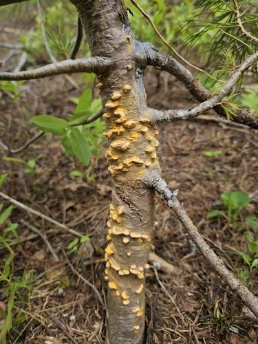

五针松的一根侧枝整段变红
同一树冠上只见一根侧枝整段变红时，沿着枝条向树干方向检查树皮。

先检查哪里
先看一根健康小枝。这类松疱锈病所影响的白松类，松针通常五针一束。再从变色枝梢往主干方向找，留意局部树皮是否肿胀、变色。分别拍下树皮近照和针叶由绿转红的位置。
怎样区分相似问题
春季受害树皮上有时可见浅色疱状突起，破裂处露出橙色物质。秋天再看，可能只剩粗糙树皮或树脂。正常换针多见于数根枝条的内侧老针；若同一处树皮损伤以外的枝梢全红，还应排查折断或勒伤。
现在可以做什么
记录损伤是在一根侧枝上，还是已经延伸到主干。这会影响修枝能否去掉受害组织。若损伤位于主干，或从地面无法安全看清，请树艺师先评估再决定处理方式。
接下来观察什么
保留一张全树照片作对照，下次检查附近绿梢是否也已变色，树冠里有无第二根整段发红的枝条。在草图上记下树皮病斑的位置，来年春季可在同一位置复查。
一根侧枝变红与整行松树褪色
沿同一行树退后几步看。若只有一树的一根侧枝变红，且红枝近端有局部树皮损伤，记录这处对应关系。若邻树同一高度或同一迎风面都在褪色，更应把道路盐雾、干风等共同暴露情况告诉诊断人员。仅凭枝端针叶的颜色难以区分这两类问题。